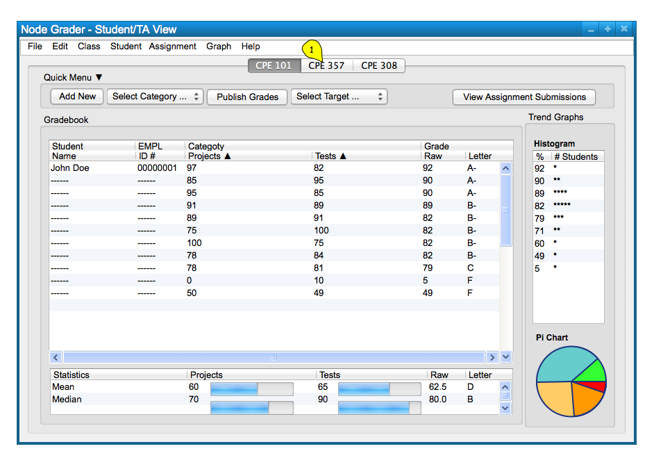
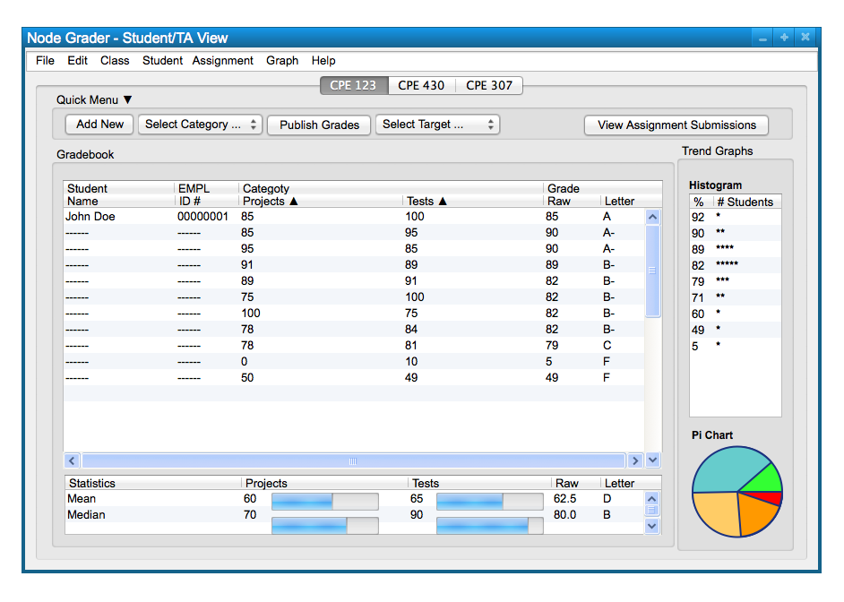

In order for the user to see different gradebooks that they are associated with they can easily select a different class tab as shown by the yellow pointer in Figure 1 below.

Figure 1: Selecting Different Class Gradebook.
Another way to access even more gradebooks is to change the quarter so that a different period of time can be shown. To do this the user must select the 'Class Choose Quarter' command. This is shown below in Figure 2.
Figure 2: Choose Quarter Path.
After the user selcts their desired quarter the gradebook and class list is updated to show the classes the user is associated with for the given quarter. The results is shown below in Figure 3; notice how the class list has changed for the user.

Figure 3: Quarter Changed View